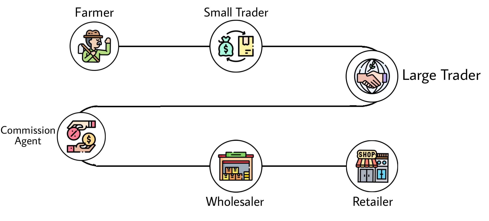
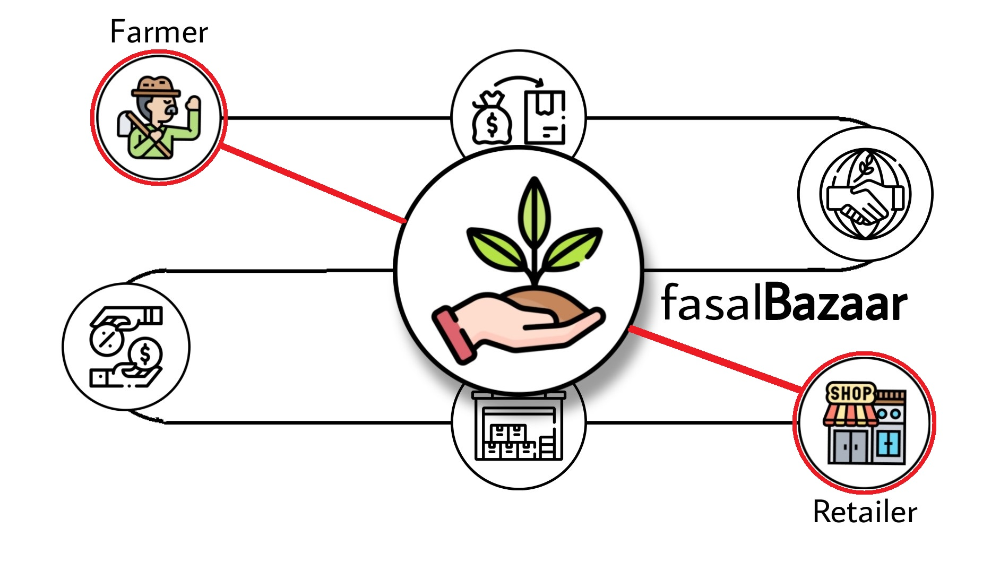

- A DIGITAL MARKETPLACE WHERE FAIR FOOD TRADE MADE EASY, FAST AND TRANSPARENT -
In the absence of a direct link with the consumers, the farmers are at the mercy of the middlemen who occupy the entire space between the production and the ultimate sale of the produce. This makes middlemen very powerful and the farmers often find themselves at a disadvantage despite being the producers.
Farmers→ Small Traders (Kaccha)→Larger Trader (Pakka)→Commission agent→Wholesaler→ Retailer
Our platform provides a facility of direct transaction between buyers and sellers, no middlemen are reqiure. All intermediate supply chain stages are covered by fasalBazaar. We does not buy or sell crops and is not a broker. Instead, we offer you the ability to effortlessly market your crop via our platform.
We open the door to thousands of approved buyers and sellers. Add your crop details and price as a registered seller which will reflect in our digital marketplace, or buy the crop as a platform verified buyer.